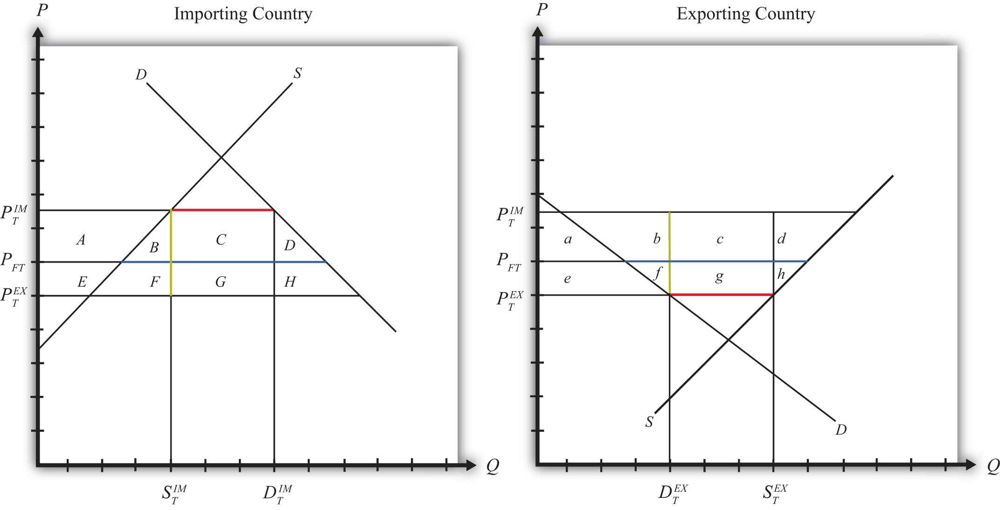

Suppose that there are only two trading countries: one importing country and one exporting country. The supply and demand curves for the two countries are shown in Figure 7.38 "Welfare Effects of an Export Tax: Large Country Case". PFT is the free trade equilibrium price. At that price, the excess demand by the importing country equals excess supply by the exporter.
Figure 7.38 Welfare Effects of an Export Tax: Large Country Case
The quantity of imports and exports is shown as the blue line segment on each country’s graph (the horizontal distance between the supply and demand curves at the free trade price). When a large exporting country implements an export tax, it will cause a decrease in the price of the good on the domestic market and an increase in the price in the rest of the world (RoW). Suppose after the tax, the price in the importing country rises to and the price in the exporting country falls to . If the tax is a specific tax, then the tax rate would be , equal to the length of the green line segment in Figure 7.38 "Welfare Effects of an Export Tax: Large Country Case". If the tax were an ad valorem tax, then the tax rate would be given by
Table 7.17 "Welfare Effects of an Export Tax" provides a summary of the direction and magnitude of the welfare effects to producers, consumers, and the governments in the importing and exporting countries. The aggregate national welfare effects and the world welfare effects are also shown.
Table 7.17 Welfare Effects of an Export Tax
| Importing Country | Exporting Country | |
|---|---|---|
| Consumer Surplus | − (A + B + C + D) | + e |
| Producer Surplus | + A | − (e + f + g + h) |
| Govt. Revenue | 0 | + (c + g) |
| National Welfare | − (B + C + D) | + c − (f + h) |
| World Welfare | − (B + D) − (f + h) |
Refer to Table 7.17 "Welfare Effects of an Export Tax" and Figure 7.38 "Welfare Effects of an Export Tax: Large Country Case" to see how the magnitudes of the changes are represented.
Export tax effects on the exporting country’s consumers. Consumers of the product in the exporting country experience an increase in well-being as a result of the export tax. The decrease in their domestic price raises the amount of consumer surplus in the market.
Export tax effects on the exporting country’s producers. Producers in the exporting country experience a decrease in well-being as a result of the tax. The decrease in the price of their product in their own market decreases producer surplus in the industry. The price decline also induces a decrease in output, a decrease in employment, and a decrease in profit, payments, or both to fixed costs.
Export tax effects on the exporting country’s government. The government receives tax revenue as a result of the export tax. Who benefits from the revenue depends on how the government spends it. Typically, the revenue is simply included as part of the general funds collected by the government from various sources. In this case, it is impossible to identify precisely who benefits. However, these funds help support many government spending programs, which presumably help either most people in the country, as is the case with public goods, or certain worthy groups. Thus someone within the country is the likely recipient of these benefits.
Export tax effects on the exporting country. The aggregate welfare effect for the country is found by summing the gains and losses to consumers and producers. The net effect consists of three components: a positive terms of trade effect (c), a negative consumption distortion (f), and a negative production distortion (h).
Because there are both positive and negative elements, the net national welfare effect can be either positive or negative. The interesting result, however, is that it can be positive. This means that an export tax implemented by a large exporting country may raise national welfare.
Generally speaking, the following are true:
However, it is also important to note that not everyone’s welfare rises when there is an increase in national welfare. Instead, there is a redistribution of income. Producers of the product and recipients of government spending will benefit, but consumers will lose. A national welfare increase, then, means that the sum of the gains exceeds the sum of the losses across all individuals in the economy. Economists generally argue that, in this case, compensation from winners to losers can potentially alleviate the redistribution problem.
Export tax effects on the importing country’s consumers. Consumers of the product in the importing country suffer a reduction in well-being as a result of the export tax. The increase in the price of both imported goods and the domestic substitutes reduces the amount of consumer surplus in the market.
Export tax effects on the importing country’s producers. Producers in the importing country experience an increase in well-being as a result of the export tax. The increase in the price of their product on the domestic market increases producer surplus in the industry. The price increase also induces an increase in the output of existing firms (and perhaps the addition of new firms), an increase in employment, and an increase in profit, payments, or both to fixed costs.
Export tax effects on the importing country’s government. There is no effect on the importing country’s government revenue as a result of the exporter’s tax.
Export tax effects on the importing country. The aggregate welfare effect for the country is found by summing the gains and losses to consumers, producers, and the government. The net effect consists of three components: a negative terms of trade effect (C), a negative production distortion (B), and a negative consumption distortion (D).
Since all three components are negative, the export tax must result in a reduction in national welfare for the importing country. However, it is important to note that a redistribution of income occurs—that is, some groups gain while others lose. In this case, the sum of the losses exceeds the sum of the gains.
Export tax effects on world welfare. The effect on world welfare is found by summing the national welfare effects on the importing and exporting countries. By noting that the terms of trade gain to the exporter is equal to the terms of trade loss to the importer, the world welfare effect reduces to four components: the importer’s negative production distortion (B), the importer’s negative consumption distortion (D), the exporter’s negative consumption distortion (f), and the exporter’s negative production distortion (h). Since each of these is negative, the world welfare effect of the export tax is negative. The sum of the losses in the world exceeds the sum of the gains. In other words, we can say that an export tax results in a reduction in world production and consumption efficiency.
Suppose there are two large countries, the United States and China. Assume that both countries produce and consume clothing. The United States imports clothing from China. Consider the trade policy action listed along the top row of the table below. In the boxes, indicate the effect of the policy on the variables listed in the first column. Use a partial equilibrium, perfect competition model to determine the answers. You do not need to show your work. Use the following notation:
+ the variable increases
− the variable decreases
0 the variable does not change
A the variable change is ambiguous (i.e., it may rise, it may fall)
Table 7.18 Effects of an Export Tax
| Chinese Implementation of an Export Tax | |
|---|---|
| U.S. Domestic Consumer Price | |
| U.S. Domestic Consumer Welfare | |
| U.S. Domestic Producer Welfare | |
| U.S. National Welfare | |
| Chinese Producer Welfare | |
| Chinese Consumer Welfare | |
| Chinese National Welfare |